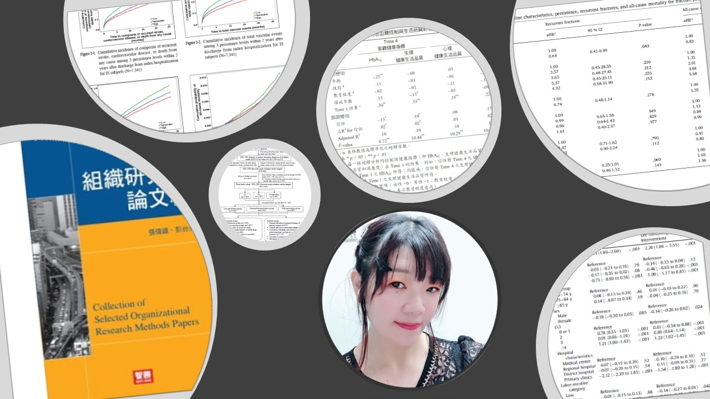

匯東華統計顧問有限公司
匯東華統計顧問有限公司


你是否遇過這些困擾？
KM 曲線高估事件發生率
當病人可能死於多種原因時，傳統 Kaplan-Meier 法會高估特定原因的累積發生率，產生誤導結論的潛在風險。
兩種 Hazard 分不清，選錯模型就答錯題
Cause-specific hazard 與 Fine-Gray（subdistribution hazard）解讀不同；你想回答病因或預測？選錯常被 reviewer 直接點名。
老闆/臨床要的是「某時間點機率」，你卻只能給 HR
被追問：「1 年內因特定原因事件機率是多少？」競爭風險用 CIF / Fine-Gray 才能把絕對風險講清楚，提供決策依據。
R 套件太多、流程卡住：CIF/Gray’s test 跑不出來
cmprsk、tidycmprsk、survival… 名稱看過但不會串：整理資料、事件編碼、畫 CIF、做 Gray’s test、接迴歸模型頭很痛。
把競爭事件當設限，常出現「看似顯著但其實錯」
KM / 一般 Cox ph model可能因競爭事件分布不同產生假象。被指出方法不當時，後面推論往往會被整段否決。
審稿人要求不會回應
「請使用競爭風險分析」「請提供 Fine-Gray 模型結果」看到這些 comments 就慌了？本課帶你用分析＋回覆模板一次解決。
課程介紹
在臨床研究中，病人的終點事件往往不只一種。例如，心臟病研究中患者可能「死於心血管疾病」或「死於其他原因」；癌症研究中可能「因癌症復發而死」或「因治療併發症而死」。這些情境都屬於競爭風險（Competing Risks）。
當存在競爭風險時，傳統的 Kaplan-Meier 方法會高估事件的累積發生率，可能導致錯誤的臨床決策。本課程將從概念到實作，完整教授競爭風險分析的理論與 R 語言實作。
重要的是，本課程結合AI 輔助分析，教你如何使用 Claude/ChatGPT 協助撰寫與除錯 R 程式碼，並提供匯東華 Prompt 範本 + 驗證清單 + 審稿回覆模板，大幅降低學習門檻、提升產出效率。
核心觀念：為什麼 Kaplan-Meier 不夠？
傳統 KM 法 vs 競爭風險分析
課程特色
R 語言實作導向
使用 tidycmprsk 等現代套件，程式碼更易讀；從數據整理到出版級圖表，一次學會。
AI 助力降門檻（但不盲信）
教你用 Claude/ChatGPT 生成與除錯 R 程式碼，並附匯東華Prompt 範本＋驗證清單，降低門檻、提升可靠度。
真實數據復現
使用公開數據集，完整復現發表論文的分析流程，確保可套用到你的研究。
審稿人視角
教你如何正確報告 Fine-Gray 結果、回應常見要求。
課程大綱
Part 1 競爭風險概念與為何重要
- 什麼是競爭風險？臨床實例說明
- 為什麼 Kaplan-Meier 會高估累積發生率？
- 非訊息性設限 vs 訊息性設限
- 何時必須使用競爭風險分析？
Part 2 累積發生率函數（CIF）
- CIF 的定義與計算原理
- CIF vs 1-KM：數學上的差異
- Gray's test：正確的組間比較檢定
- CIF 圖形的繪製與解讀
Part 3 兩種 Hazard 的選擇
- Cause-specific hazard：病因學研究
- Subdistribution hazard：臨床預測模型
- 兩種 hazard 的定義與差異
- 什麼情況用哪種？選擇流程圖
Part 4 Cause-Specific Cox ph模型
- 將競爭事件視為設限的標準 Cox ph模型
- R 語言實作：survival 套件
- 結果解讀與報告方式
- 與標準 Cox ph模型的比較
Part 5 Fine-Gray 模型
- Subdistribution hazard 的概念
- Fine-Gray 模型的數學原理
- R 語言實作：tidycmprsk 套件
- Subdistribution hazard ratio（SHR）的解讀
AI 助力 使用 AI 輔助 R 分析
- 如何向 AI 描述你的分析需求
- AI 生成 R 程式碼的驗證與修正（避免「生成不等於完成」）
- 常見錯誤訊息的 AI 除錯技巧（cmprsk / tidycmprsk / survival）
- AI 輔助撰寫分析報告與審稿回覆（Methods/Results 模板）
- 匯東華加值：Prompt 範本 + 檢核清單 + 審稿回覆模板（可直接套用）
Part 6 真實數據實作
- 數據集介紹
- 數據整理與變數定義
- 完整分析流程復現
- CIF 圖表繪製與美化
Part 7 出版級表格與圖形
- 使用 gtsummary 製作 Table 1
- 競爭風險分析結果表格
- 出版級 CIF 圖形製作
- Forest plot 繪製
重點 審稿人常見問題與回覆
- 「請使用競爭風險分析」如何回應
- 何時同時報告兩種模型結果
- Fine-Gray 模型的報告規範
- 常見錯誤與避免方式
適用對象
已有基礎存活分析知識，想學習進階競爭風險分析的研究人員
臨床研究者
進行癌症、心血管、移植等研究，數據中存在多種終點事件，需要正確處理競爭風險。
碩博士研究生
論文需要使用競爭風險分析，想從基礎開始學習 R 語言實作。
論文投稿者
曾被審稿人要求使用競爭風險分析，想學會正確的分析與報告方式。
存活分析學習路徑
⚠ 先修建議： 本課程為進階課程，建議已了解 Kaplan-Meier 曲線與 Cox ph model基本概念。 若尚未具備，建議先從 Live26-07 或 F26-03 開始。
課程資訊
實體課程 vs 線上課程，怎麼選？
實體課程（本課程）
- R 程式碼即時除錯，問題現場解決
- 小班制 15 人，確保學習品質
- 含 AI 輔助分析實作（Prompt 範本＋驗證清單）
直播課程
- 效期內不限時空，隨時隨地學習
- 可重複觀看，適合複習
- 概念為主，適合入門了解
相關直播課程｜ Live26-11 何時要考慮競爭風險？ →
延伸學習資源
以下是與競爭風險分析相關的優質資源：

統計分析
服務價目表 (未含5%營業稅)
透過嚴謹的數據整理，提供有價值的資訊，形塑知識，提高決策品質。包括信達雅三執行原則。
信：確保資料品質可信賴
達：確保統計方法適切性
雅：確保圖文表格正規化
協助代執行統計分析與進一步加值服務。
在匯東華與夥伴的專業背景知識配合下，能有效地處理面對的問題。
統計分析成果


數據串接與清洗
數據是礦藏，數據清洗是挖出鑽石的第一步，尤其是巨量知識。數據清洗或串接執行過程需要細心與專注，且有可能會消耗許多時間和精力，就由我們來替各位處理掉這個大麻煩。
全民健保研究資料庫、國外大型資料庫資料非常齊全，種類多，需要串接與清洗，進行正規化後才能更進一步進行資料探勘與統計分析。

Fig1.同一個Project資料散落在不同tables，無法使用

Fig2.整併與清理為可分析的table

Fig.3整理和分析後形成有意義的知識
概念與流程示意圖

計畫撰寫與統計諮詢


為了讓匯東華的顧客與學員有更好的合作和消費體驗，故匯東華特別依據營業項目開發周邊產品，提供使用、購買。目前已有針對公共衛生師的題庫以及模擬試題，未來將針對醫學研究領域發展產品。